Decimals
Name and Write Decimals
Decimals are another way of writing fractions whose denominators are powers of 10.
Notice that “ten thousand” is a number larger than one, but “one ten-thousandth” is a number smaller than one. The “th” at the end of the name tells you that the number is smaller than one.
When we name a whole number, the name corresponds to the place value based on the powers of ten. We read 10,000 as “ten thousand” and 10,000,000 as “ten million.” Likewise, the names of the decimal places correspond to their fraction values. Figure 1 shows the names of the place values to the left and right of the decimal point.
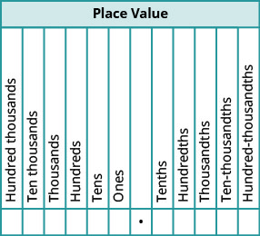
How to Name Decimals
Name the decimal 4.3.
Solution
Solution
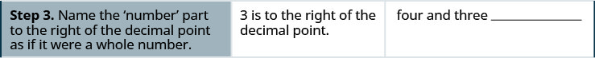
We summarize the steps needed to name a decimal below.
Name the decimal:
Solution
Solution
| Name the number to the left of the decimal point. | negative fifteen __________________________________ |
| Write “and” for the decimal point. | negative fifteen and ______________________________ |
| Name the number to the right of the decimal point. | negative fifteen and five hundred seventy-one __________ |
| The 1 is in the thousandths place. | negative fifteen and five hundred seventy-one thousandths |
When we write a check we write both the numerals and the name of the number. Let’s see how to write the decimal from the name.
How to Write Decimals
Write “fourteen and twenty-four thousandths” as a decimal.
Solution
Solution
![A table is given with four steps. The first step reads “Step 1. Look for the work ‘and’ – it locates the decimal point. Place a decimal point under the word ‘and’. Translate the words before ‘and’ into the whole number and place it to the left of the decimal point.” To the right of this, we have the words “fourteen and twenty-four thousandths.” Below this word, we have “fourteen and twenty-four thousandths” with the word “and” underlined. Below this word, we have a small blank space separated from a larger blank space by a decimal point. Under this, we have 14 in the small blank space followed by the decimal point and the larger blank space.](../../media/CNX_ElemAlg_Figure_01_07_003a_new.jpg)
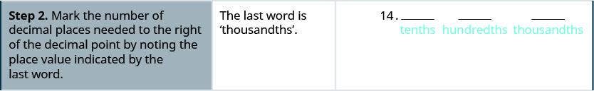
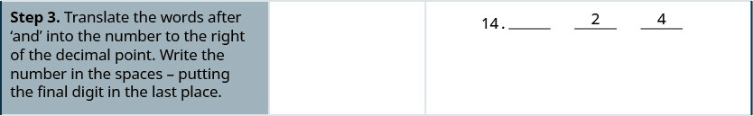
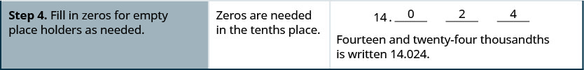
We summarize the steps to writing a decimal.
Round Decimals
Rounding decimals is very much like rounding whole numbers. We will round decimals with a method based on the one we used to round whole numbers.
How to Round Decimals
Round 18.379 to the nearest hundredth.
Solution
Solution
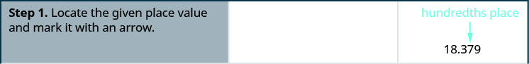
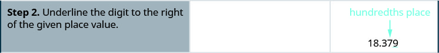
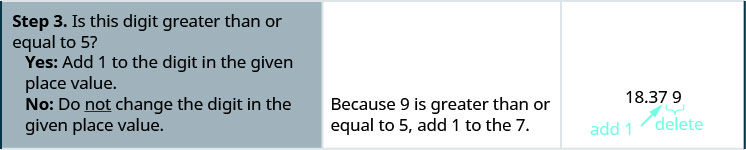
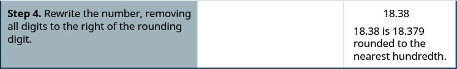
We summarize the steps for rounding a decimal here.
Round 18.379 to the nearest ⓐ tenth ⓑ whole number.
Solution
Solution
Round 18.379
-
ⓐ to the nearest tenth
Locate the tenths place with an arrow. 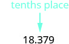
Underline the digit to the right of the given place value. 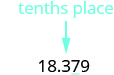
Because 7 is greater than or equal to 5, add 1 to the 3. 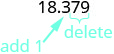
Rewrite the number, deleting all digits to the right of the rounding digit. 
Notice that the deleted digits were NOT replaced with zeros. So, 18.379 rounded to the nearest tenth is 18.4.
-
ⓑ to the nearest whole number
Locate the ones place with an arrow. 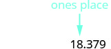
Underline the digit to the right of the given place value. 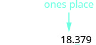
Since 3 is not greater than or equal to 5, do not add 1 to the 8. Rewrite the number, deleting all digits to the right of the rounding digit. 
So, 18.379 rounded to the nearest whole number is 18.
Add and Subtract Decimals
To add or subtract decimals, we line up the decimal points. By lining up the decimal points this way, we can add or subtract the corresponding place values. We then add or subtract the numbers as if they were whole numbers and then place the decimal point in the sum.
Add:
Solution
Solution
| Write the numbers so the decimal points line up vertically. | |
| Put 0 as a placeholder after the 5 in 23.5.
Remember, . |
|
| Add the numbers as if they were whole numbers.
Then place the decimal point in the sum. |
Subtract:
Solution
Solution
| Write the numbers so the decimal points line up vertically.
Remember, 20 is a whole number, so place the decimal point after the 0. |
|
| Put in zeros to the right as placeholders. | |
| Subtract and place the decimal point in the answer. |
Multiply and Divide Decimals
Multiplying decimals is very much like multiplying whole numbers—we just have to determine where to place the decimal point. The procedure for multiplying decimals will make sense if we first convert them to fractions and then multiply.
So let’s see what we would get as the product of decimals by converting them to fractions first. We will do two examples side-by-side. Look for a pattern!
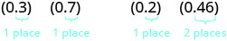 |
|
| Convert to fractions. |  |
| Multiply. |  |
| Convert to decimals. | 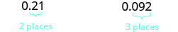 |
Notice, in the first example, we multiplied two numbers that each had one digit after the decimal point and the product had two decimal places. In the second example, we multiplied a number with one decimal place by a number with two decimal places and the product had three decimal places.
We multiply the numbers just as we do whole numbers, temporarily ignoring the decimal point. We then count the number of decimal points in the factors and that sum tells us the number of decimal places in the product.
The rules for multiplying positive and negative numbers apply to decimals, too, of course!
When multiplying two numbers,
- if their signs are the same the product is positive.
- if their signs are different the product is negative.
When we multiply signed decimals, first we determine the sign of the product and then multiply as if the numbers were both positive. Finally, we write the product with the appropriate sign.
Multiply:
Solution
Solution
| (−3.9)(4.075) | |
| The signs are different. The product will be negative. | |
| Write in vertical format, lining up the numbers on the right. |  |
| Multiply. |  |
| Add the number of decimal places in the factors (1 + 3). 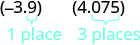 Place the decimal point 4 places from the right. |
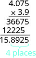 |
| The signs are different, so the product is negative. | (−3.9)(4.075) = −15.8925 |
In many of your other classes, especially in the sciences, you will multiply decimals by powers of 10 (10, 100, 1000, etc.). If you multiply a few products on paper, you may notice a pattern relating the number of zeros in the power of 10 to number of decimal places we move the decimal point to the right to get the product.
Multiply 5.63 ⓐ by 10 ⓑ by 100 ⓒ by 1,000.
Solution
Solution
By looking at the number of zeros in the multiple of ten, we see the number of places we need to move the decimal to the right.
| 5.63(10) | |
| There is 1 zero in 10, so move the decimal point 1 place to the right. |  |
ⓑ
| 5.63(100) | |
| There are 2 zeros in 100, so move the decimal point 2 places to the right. | 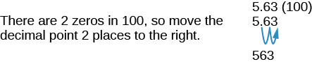 |
ⓒ
| 5.63(1,000) | |
| There are 3 zeros in 1,000, so move the decimal point 3 places to the right. | 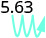 |
| A zero must be added at the end. | 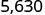 |
Just as with multiplication, division of decimals is very much like dividing whole numbers. We just have to figure out where the decimal point must be placed.
To divide decimals, determine what power of 10 to multiply the denominator by to make it a whole number. Then multiply the numerator by that same power of Because of the equivalent fractions property, we haven’t changed the value of the fraction! The effect is to move the decimal points in the numerator and denominator the same number of places to the right. For example:
We use the rules for dividing positive and negative numbers with decimals, too. When dividing signed decimals, first determine the sign of the quotient and then divide as if the numbers were both positive. Finally, write the quotient with the appropriate sign.
We review the notation and vocabulary for division:
We’ll write the steps to take when dividing decimals, for easy reference.
Divide:
Solution
Solution
Remember, you can “move” the decimals in the divisor and dividend because of the Equivalent Fractions Property.
| The signs are the same. | The quotient is positive. |
| Make the divisor a whole number by “moving” the decimal point all the way to the right. | |
| “Move” the decimal point in the dividend the same number of places. | 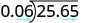 |
| Divide. Place the decimal point in the quotient above the decimal point in the dividend. |
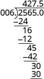 |
| Write the quotient with the appropriate sign. |
A common application of dividing whole numbers into decimals is when we want to find the price of one item that is sold as part of a multi-pack. For example, suppose a case of 24 water bottles costs $3.99. To find the price of one water bottle, we would divide $3.99 by 24. We show this division in Example 11. In calculations with money, we will round the answer to the nearest cent (hundredth).
Divide:
Solution
Solution
| Place the decimal point in the quotient above the decimal point in the dividend. | |
| Divide as usual. When do we stop? Since this division involves money, we round it to the nearest cent (hundredth.) To do this, we must carry the division to the thousandths place. |
 |
| Round to the nearest cent. |
|
Convert Decimals, Fractions, and Percents
We convert decimals into fractions by identifying the place value of the last (farthest right) digit. In the decimal 0.03 the 3 is in the hundredths place, so 100 is the denominator of the fraction equivalent to 0.03.
Notice, when the number to the left of the decimal is zero, we get a fraction whose numerator is less than its denominator. Fractions like this are called proper fractions.
The steps to take to convert a decimal to a fraction are summarized in the procedure box.
Write 0.374 as a fraction.
Solution
Solution
| Determine the place value of the final digit. | 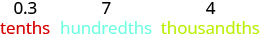 |
Write the fraction for 0.374:
|
|
| Simplify the fraction. | |
| Divide out the common factors. |
so, |
Did you notice that the number of zeros in the denominator of is the same as the number of decimal places in 0.374?
We’ve learned to convert decimals to fractions. Now we will do the reverse—convert fractions to decimals. Remember that the fraction bar means division. So can be written or This leads to the following method for converting a fraction to a decimal.
Write as a decimal.
Solution
Solution
Since a fraction bar means division, we begin by writing as Now divide.
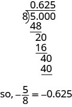
When we divide, we will not always get a zero remainder. Sometimes the quotient ends up with a decimal that repeats. A repeating decimal is a decimal in which the last digit or group of digits repeats endlessly. A bar is placed over the repeating block of digits to indicate it repeats.
A bar is placed over the repeating block of digits to indicate it repeats.
Write as a decimal.
Solution
Solution
![The number 43/22 is given. The direction is given to “Divide 43 by 22.” A long division problem is given with 22 dividing 43.00000 with 1.95454 as the quotient. Below 43.00000 we have 22, a solid horizontal line, 210, 198, a solid horizontal line, 120, 110, a horizontal line, 100, 88, a solid horizontal line, 120, 110, a solid horizontal line, 100, 88, a solid horizontal line, and then three dots. It is noted that the 120 repeats and that the 100 repeats. This is further explicated as “The pattern repeats, so the numbers in the quotient will repeat as well. At the end, we are given the statement that 43/22 equals 1.954 with a small horizontal line over the 54.](../../media/CNX_ElemAlg_Figure_01_07_018_img_new.jpg)
Sometimes we may have to simplify expressions with fractions and decimals together.
Simplify:
Solution
Solution
| Change to a decimal. |  |
|
| Add. | ||
| So, |
A percent is a ratio whose denominator is 100. Percent means per hundred. We use the percent symbol, %, to show percent.
Since a percent is a ratio, it can easily be expressed as a fraction. Percent means per 100, so the denominator of the fraction is 100. We then change the fraction to a decimal by dividing the numerator by the denominator.
| Write as a ratio with denominator 100. | |||
| Change the fraction to a decimal by dividing the numerator by the denominator. |
Do you see the pattern? To convert a percent number to a decimal number, we move the decimal point two places to the left.
![The first part of this figure shows 6% with an arrow drawn from between the 6 and the percentage sign to the space to the left of 6 and then to the space further to the left of that space. Below this, the number 0.06 is given. The second part of this figure shows 78% with an arrow drawn from between the 8 and the percentage sign to the space between the 7 and the 8 and then to the space to the left of the 7. Below this, the number 0.78 is given. The third part of this figure shows 2.7% with an arrow drawn from the decimal point to the space to the left of the 2 and then to the space further to the left of that space. Below this, the number 0.027 is given. The fourth part of this figure shows 135% with an arrow drawn from between the 5 and the percentage sign to the space between 3 and 5 and then to the space between 1 and 3. Below this, the number 1.35 is given.](../../media/CNX_ElemAlg_Figure_01_07_023_img_new.jpg)
Convert each percent to a decimal: ⓐ 62% ⓑ 135% ⓒ 35.7%.
Solution
Solution
| ⓐ | |
 |
|
| Move the decimal point two places to the left. |
| ⓑ | |
 |
|
| Move the decimal point two places to the left. |
| ⓒ | |
 |
|
| Move the decimal point two places to the left. |
Converting a decimal to a percent makes sense if we remember the definition of percent and keep place value in mind.
To convert a decimal to a percent, remember that percent means per hundred. If we change the decimal to a fraction whose denominator is 100, it is easy to change that fraction to a percent.
| Write as a fraction. | |||
| The denominator is 100. | |||
| Write the ratio as a percent. |
Recognize the pattern? To convert a decimal to a percent, we move the decimal point two places to the right and then add the percent sign.
![The first part of this figure shows 0.05 with an arrow drawn from the decimal point to the space between 0 and 5 and then to the space after 5. Below this, the number 5% is given. The second part of this figure shows 0.83 with an arrow drawn from the decimal point to the space between 8 and 3 and then to the space after 3. Below this, the number 83% is given. The third part of this figure shows 1.05 with an arrow drawn from the decimal point to the space between 0 and 5 and then to the space after 5. Below this, the number 105% is given. The fourth part of this figure shows 0.075 with an arrow drawn from the decimal point to the space between 0 and 7 and then to the space between 7 and 5. Below this, the number 7.5% is given. The fifth part of this figure shows 0.3 with an arrow drawn from the decimal point to the space after 3 and then to space further to the right of that 3. Below this, the number 30% is given.](../../media/CNX_ElemAlg_Figure_01_07_021_img_new.jpg)
Convert each decimal to a percent: ⓐ 0.51 ⓑ 1.25 ⓒ 0.093.
Solution
Solution
| ⓐ | |
 |
|
| Move the decimal point two places to the right. |
| ⓑ | |
 |
|
| Move the decimal point two places to the right. |
| ⓒ | |
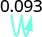 |
|
| Move the decimal point two places to the right. |
Key Concepts
-
Name a Decimal
- Name the number to the left of the decimal point.
- Write ”and” for the decimal point.
- Name the “number” part to the right of the decimal point as if it were a whole number.
- Name the decimal place of the last digit.
-
Write a Decimal
- Look for the word ‘and’—it locates the decimal point. Place a decimal point under the word ‘and.’ Translate the words before ‘and’ into the whole number and place it to the left of the decimal point. If there is no “and,” write a “0” with a decimal point to its right.
- Mark the number of decimal places needed to the right of the decimal point by noting the place value indicated by the last word.
- Translate the words after ‘and’ into the number to the right of the decimal point. Write the number in the spaces—putting the final digit in the last place.
- Fill in zeros for place holders as needed.
-
Round a Decimal
- Locate the given place value and mark it with an arrow.
- Underline the digit to the right of the place value.
- Is this digit greater than or equal to 5? Yes—add 1 to the digit in the given place value. No—do not change the digit in the given place value.
- Rewrite the number, deleting all digits to the right of the rounding digit.
-
Add or Subtract Decimals
- Write the numbers so the decimal points line up vertically.
- Use zeros as place holders, as needed.
- Add or subtract the numbers as if they were whole numbers. Then place the decimal in the answer under the decimal points in the given numbers.
-
Multiply Decimals
- Determine the sign of the product.
- Write in vertical format, lining up the numbers on the right. Multiply the numbers as if they were whole numbers, temporarily ignoring the decimal points.
- Place the decimal point. The number of decimal places in the product is the sum of the decimal places in the factors.
- Write the product with the appropriate sign.
-
Multiply a Decimal by a Power of Ten
- Move the decimal point to the right the same number of places as the number of zeros in the power of 10.
- Add zeros at the end of the number as needed.
-
Divide Decimals
- Determine the sign of the quotient.
- Make the divisor a whole number by “moving” the decimal point all the way to the right. “Move” the decimal point in the dividend the same number of places - adding zeros as needed.
- Divide. Place the decimal point in the quotient above the decimal point in the dividend.
- Write the quotient with the appropriate sign.
-
Convert a Decimal to a Proper Fraction
- Determine the place value of the final digit.
- Write the fraction: numerator—the ‘numbers’ to the right of the decimal point; denominator—the place value corresponding to the final digit.
- Convert a Fraction to a Decimal Divide the numerator of the fraction by the denominator.
Practice Makes Perfect
Name and Write Decimals
In the following exercises, write as a decimal.
Twenty-nine and eighty-one hundredths
Solution
29.81
Sixty-one and seventy-four hundredths
Seven tenths
Solution
0.7
Six tenths
Twenty-nine thousandth
Solution
0.029
Thirty-five thousandths
Negative eleven and nine ten-thousandths
Solution
Negative fifty-nine and two ten-thousandths
In the following exercises, name each decimal.
5.5
Solution
five and five tenths
14.02
8.71
Solution
eight and seventy-one hundredths
2.64
0.002
Solution
two thousandths
0.479
Solution
negative seventeen and nine tenths
Round Decimals
In the following exercises, round each number to the nearest tenth.
0.67
Solution
0.7
0.49
2.84
Solution
2.8
4.63
In the following exercises, round each number to the nearest hundredth.
0.845
Solution
0.85
0.761
0.299
Solution
0.30
0.697
4.098
Solution
4.10
7.096
In the following exercises, round each number to the nearest ⓐ hundredth ⓑ tenth ⓒ whole number.
5.781
Solution
ⓐ 5.78 ⓑ 5.8 ⓒ 6
1.6381
63.479
Solution
ⓐ 63.48 ⓑ 63.5 ⓒ 63
Add and Subtract Decimals
In the following exercises, add or subtract.
Solution
24.48
Solution
Solution
Solution
Solution
Solution
15.73
Solution
102.412
Solution
51.31
Solution
Multiply and Divide Decimals
In the following exercises, multiply.
Solution
0.144
Solution
42.008
Solution
Solution
337.8914
Solution
1.305
Solution
92.4
Solution
55,200
In the following exercises, divide.
Solution
0.19
Solution
$2.44
Solution
3
Solution
Solution
35
Solution
2.08
Solution
20
Convert Decimals, Fractions and Percents
In the following exercises, write each decimal as a fraction.
0.04
Solution
0.19
0.52
Solution
0.78
1.25
Solution
1.35
0.375
Solution
0.464
0.095
Solution
0.085
In the following exercises, convert each fraction to a decimal.
Solution
0.85
Solution
2.75
Solution
Solution
Solution
Solution
3.025
In the following exercises, convert each percent to a decimal.
1%
Solution
0.01
2%
63%
Solution
0.63
71%
150%
Solution
1.5
250%
21.4%
Solution
0.214
39.3%
7.8%
Solution
0.078
6.4%
In the following exercises, convert each decimal to a percent.
0.01
Solution
1%
0.03
1.35
Solution
135%
1.56
3
Solution
300%
4
0.0875
Solution
8.75%
0.0625
2.254
Solution
225.4%
2.317
Everyday Math
Salary Increase Danny got a raise and now makes $58,965.95 a year. Round this number to the nearest ⓐ dollar ⓑ thousand dollars ⓒ ten thousand dollars.
Solution
ⓐ $58,966 ⓑ $59,000 ⓒ $60,000
New Car Purchase Selena’s new car cost $23,795.95. Round this number to the nearest ⓐ dollar ⓑ thousand dollars ⓒ ten thousand dollars.
Sales Tax Hyo Jin lives in San Diego. She bought a refrigerator for $1,624.99 and when the clerk calculated the sales tax it came out to exactly $142.186625. Round the sales tax to the nearest ⓐ penny and ⓑ dollar.
Solution
ⓐ $142.19; ⓑ $142
Sales Tax Jennifer bought a $1,038.99 dining room set for her home in Cincinnati. She calculated the sales tax to be exactly $67.53435. Round the sales tax to the nearest ⓐ penny and ⓑ dollar.
Paycheck Annie has two jobs. She gets paid $14.04 per hour for tutoring at City College and $8.75 per hour at a coffee shop. Last week she tutored for 8 hours and worked at the coffee shop for 15 hours. ⓐ How much did she earn? ⓑ If she had worked all 23 hours as a tutor instead of working both jobs, how much more would she have earned?
Solution
ⓐ $243.57 ⓑ $79.35
Paycheck Jake has two jobs. He gets paid $7.95 per hour at the college cafeteria and $20.25 at the art gallery. Last week he worked 12 hours at the cafeteria and 5 hours at the art gallery. ⓐ How much did he earn? ⓑ If he had worked all 17 hours at the art gallery instead of working both jobs, how much more would he have earned?
Writing Exercises
How does knowing about US money help you learn about decimals?
Solution
Answers may vary
Explain how you write “three and nine hundredths” as a decimal.
Without solving the problem “44 is 80% of what number” think about what the solution might be. Should it be a number that is greater than 44 or less than 44? Explain your reasoning.
Solution
Answers may vary
When the Szetos sold their home, the selling price was 500% of what they had paid for the house 30 years ago. Explain what 500% means in this context.
Self Check
ⓐ After completing the exercises, use this checklist to evaluate your mastery of the objectives of this section.
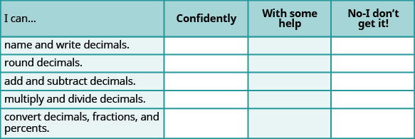
ⓑ What does this checklist tell you about your mastery of this section? What steps will you take to improve?